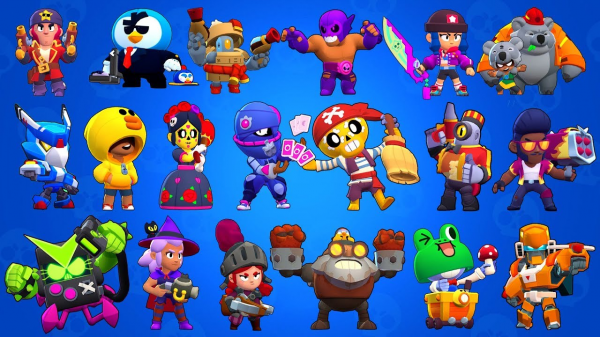
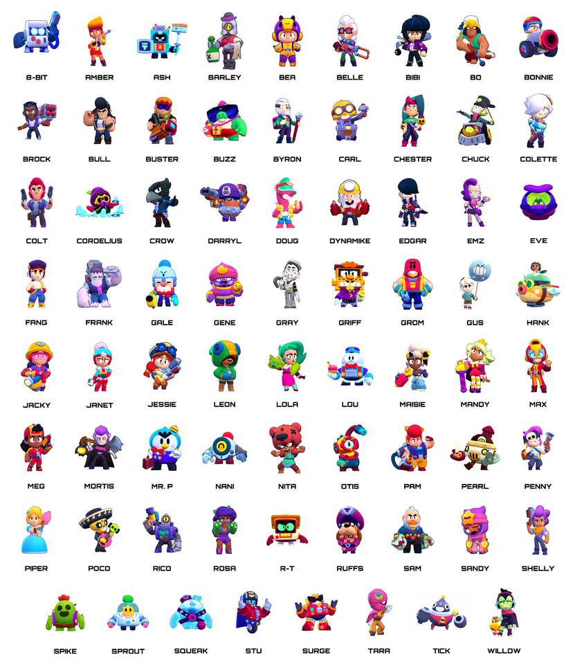
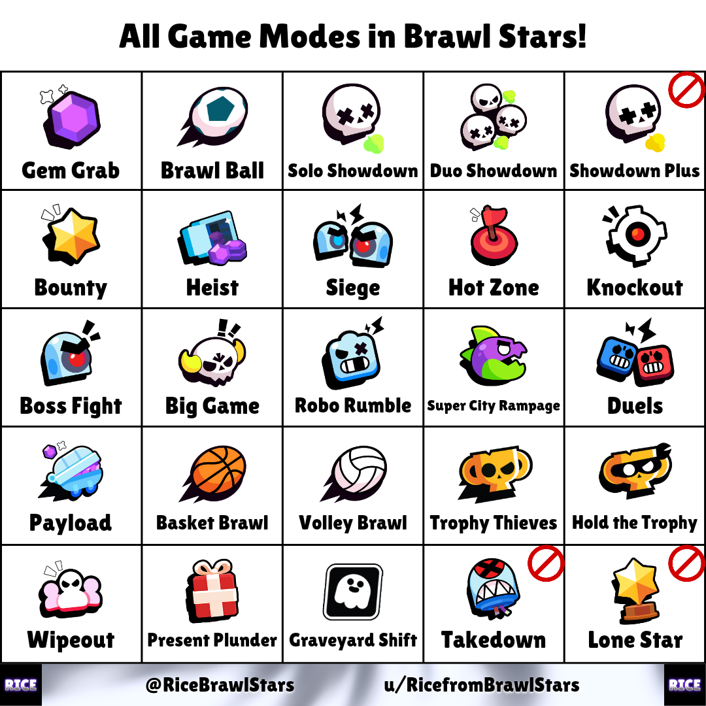

Що таке Brawl Stars
Brawl Stars – популярна гра. З величезною кількістю бійців. Ви використовуєте бійців для битв з іншими бійцями в різних ігрових режимах.
Brawl Stars – популярна гра. З величезною кількістю бійців. Ви використовуєте бійців для битв з іншими бійцями в різних ігрових режимах.


Захоплення кристалів (Gem Grab)
Дві команди по 3 гравці борються за контроль над центром карти, де з’являються кристали. Перемагає команда, яка першою збере 10 кристалів і утримає їх 15 секунд.
Зіткнення (Showdown)
Режим у форматі «кожен сам за себе» (соло) або 2 на 2 (дуо). Гравці виживають на карті, збирають підсилення і намагаються залишитися останніми.
Бравлбол (Brawl Ball)
Футбольний режим 3 на 3. Мета — забити 2 голи у ворота суперника. Гравці можуть атакувати суперників і вибивати м’яч.
Пограбування (Heist)
Команди намагаються знищити сейф противника, одночасно захищаючи свій. Виграє той, хто швидше завдасть більше шкоди сейфу.
Гаряча зона (Hot Zone)
Гравці повинні захоплювати та утримувати спеціальні зони на карті. Чим довше команда контролює зону, тим більше очок отримує.
Нагорода (Bounty)
Мета — знищувати ворогів і заробляти зірки. За кожне вбивство дається більше зірок, але гравець із великою кількістю стає цінною ціллю.
Нокаут (Knockout)
Раунди 3 на 3 без відродження. Команда, яка повністю вибиває суперників, виграє раунд. Перемагає команда, що виграла більше раундів.
